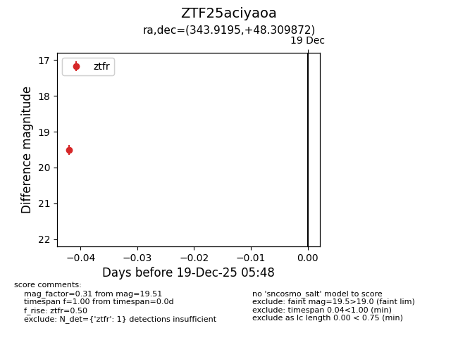
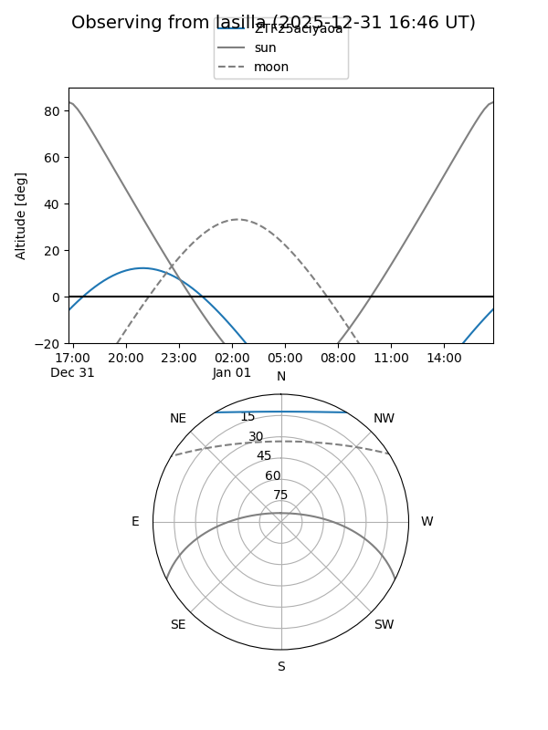
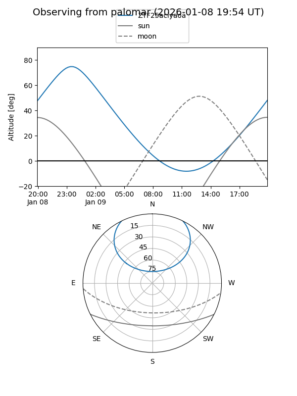

ZTF25aciyaoa
Target ZTF25aciyaoa at 2025-12-21 05:53
Aliases and brokers:
FINK: fink-portal.org/ZTF25aciyaoa
Lasair: lasair-ztf.lsst.ac.uk/objects/ZTF25aciyaoa
ALeRCE: alerce.online/object/ZTF25aciyaoa
alt names
ZTF25aciyaoa (ztf,fink_ztf)
Coordinates:
equatorial (ra, dec) = 343.9195,+48.30987
equatorial (HMS+DMS) = 22:55:40.67,+48:18:35.54
galactic (l, b) = (103.8432,-10.22469)
Flags:
Photometry:
last ztfg=18.42, ztfr=19.51
1 ztfg, 1 ztfr detections
Lightcurve

Visibility


Additional plots